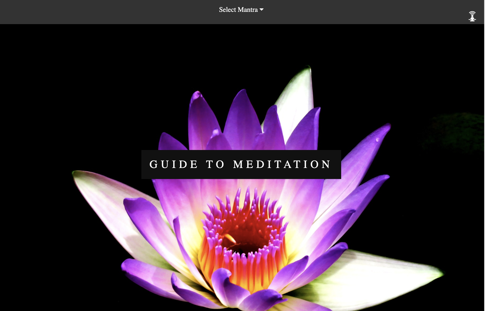

bringing Mindfulness to others
I built and designed this meditation website to help bring mindfulness to others. The webpage has 4 different Mantras for users to scroll through as well as a zen'ed out etch-a-sketch. Each Page contains 23 different mantras that appear in random order along with a photo. The idea is users can scroll through the page, repeating the mantras to themselves, to bring them back into the present moment, help them move beyond their fear, or put a new positive twist on their day and lives.
NamaGoMeditate uses a dropdown hamburger navigation menu that has a position of fixed, allowing it to always be with the user. The hamburger menu has the NamaGo logo, allows users to go back to the top of the page and navigate to other pages.